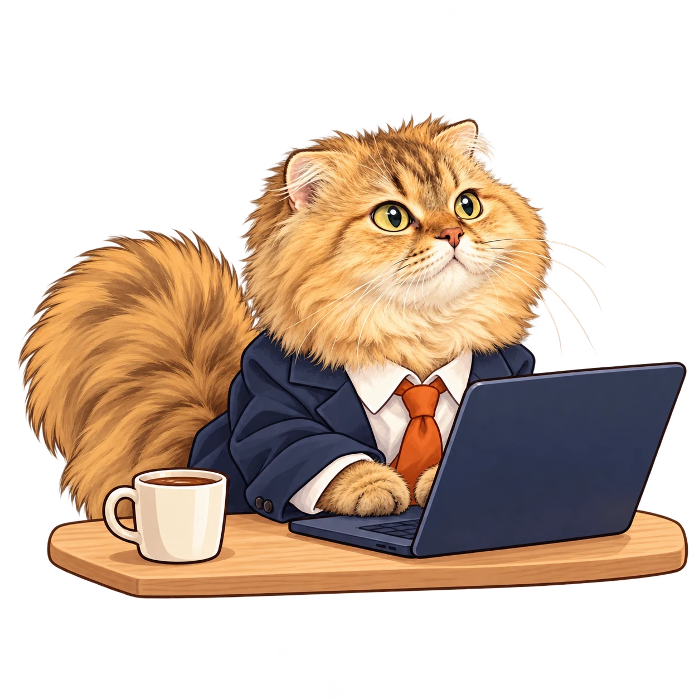
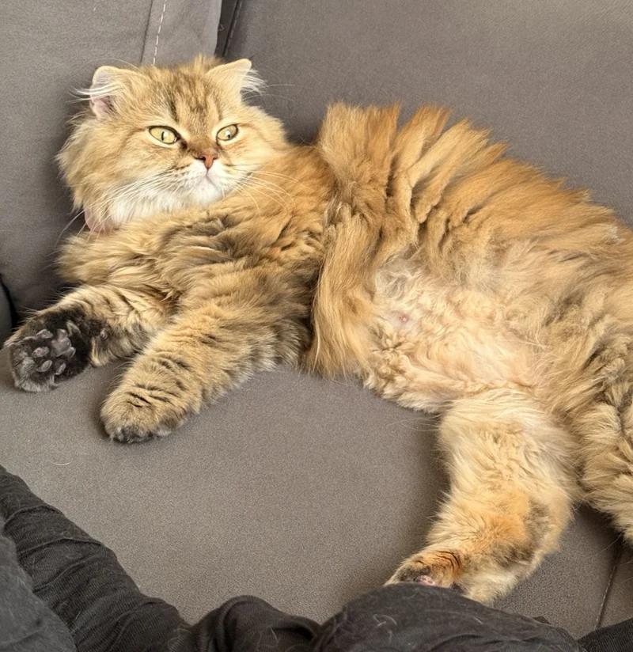
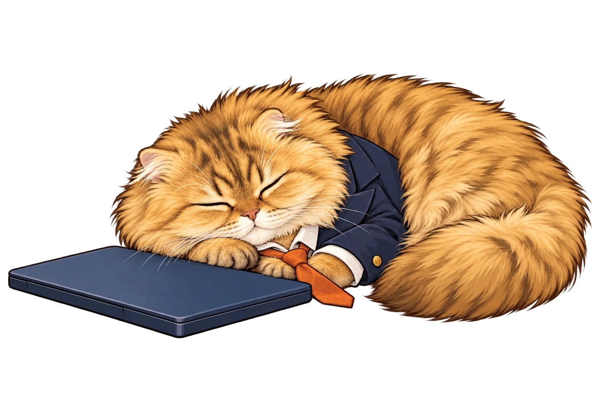

01
Software &
IT consulting
Get clarity on the problem, the tradeoffs and the next step. Practical advice, hands-on implementation, and fewer “it depends” dead ends.
We investigate. No boxes left unchecked.
BELGRADE BASED. WORLDWIDE MINDED.
Staff-level software engineering, architecture and technical leadership. Experienced hands for your next big challenge. A very small CEO for everything else.
Less overhead. More headway. Occasional hairballs.

// a good place to start
HUMAN EXPERIENCE.
FELINE STANDARDS.
01 / WHAT WE DO
From untangling an architecture to joining your team, we help turn tricky engineering problems into software you can trust.
Get clarity on the problem, the tradeoffs and the next step. Practical advice, hands-on implementation, and fewer “it depends” dead ends.
We investigate. No boxes left unchecked.
Design systems that fit your team and your product. Make deliberate decisions about reliability, scale and the complexity you actually need.
Built to scale. Not to knock off the table.
Embed an experienced engineer in your team. Own difficult projects, connect the dots across systems, and help move delivery forward.
Fits into your team. Claims a sunny spot.
Bring direction to complex work. Mentor engineers, align technical decisions with business goals, and help your team build with confidence.
Less herding cats. More moving together.
02 / HOW WE WORK
No mystery process. Just clear communication, thoughtful decisions and useful work.
Your context, your people, your actual problem. We ask questions before opening an editor.
A focused consultation or an embedded engineering engagement. Match the support to the work.
Make progress visible. Leave the team with better software, clearer decisions and shared knowledge.
THE ONE WHO WRITES THE CODE
Staff Software Engineer
& Technical Leader
03 / MEET THE HUMAN
I’m Chris, the engineer behind Nozomi Consulting. My background includes Staff Software Engineering at IonQ, Senior Software Engineering at Pager Health and technical leadership at Money Forward in Japan.
I work across hands-on development, system design and team leadership—helping connect the bigger picture to the work that needs to ship.
Based in Belgrade and working with teams internationally. You work directly with me. Nozomi handles quality assurance from a comfortable distance.

The actual boss. Zero stock photos.100%04 / MEET THE MANAGEMENT
Meet Nozomi: our namesake, resident supervisor and enthusiastic keyboard tester. Her credentials include a spectacular fluffy tail and an uncompromising commitment to naps.
She believes every complex problem deserves a fresh perspective. Preferably from the top of your laptop.
Performance reviews are snack-based.
YOUR NEXT CHAPTER
Have a project, a tricky technical question or a team that could use an extra pair of experienced hands? Let’s talk.
Say hellofuenteschris75@gmail.comYour message goes to Chris. Nozomi is still learning to type.